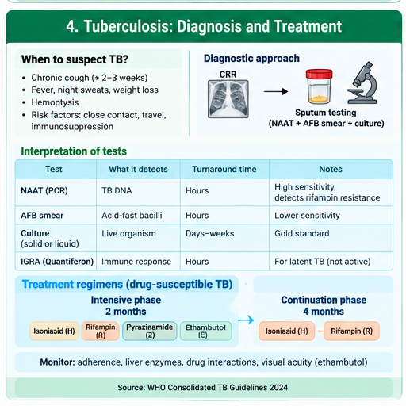
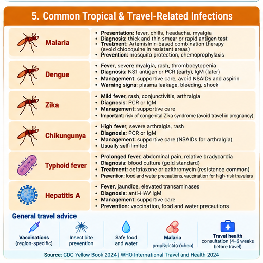
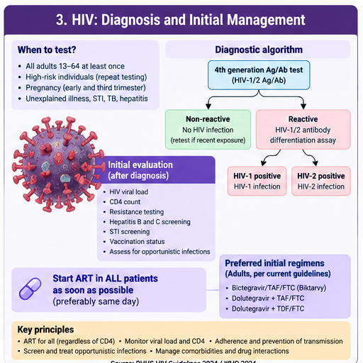

🌍 UAE-Relevant & Zoonotic Infections
High-yield tuberculosis, zoonoses, vector-borne infections, viral hepatitis/HIV, rabies prevention and common STIs for physician-level review.
90 questions
Tuberculosis: Screening, Diagnosis & RIPE Toxicities
Recognize latent versus active TB, confirm disease microbiologically, and remember classic RIPE toxicities.
Classic presentation & diagnosis
- Think pulmonary TB with chronic cough, fever, night sweats, weight loss, hemoptysis, compatible imaging, or epidemiologic risk.
- TST/IGRA identify TB infection but do not distinguish latent from active disease.
- Suspected pulmonary TB: obtain respiratory specimens for NAAT plus AFB smear and culture; culture remains essential for susceptibility testing.
- Use airborne infection isolation when contagious pulmonary/laryngeal TB is suspected.
Drug-susceptible TB — high-yield regimen
Classic exam regimen: 2 months HRZE → 4 months HR when appropriate and susceptible. Program-specific shorter regimens may be used in selected patients under current guidelines.
| Drug | Must-know toxicity / pearl |
|---|---|
| Isoniazid (H) | Hepatotoxicity; peripheral neuropathy → give pyridoxine when indicated. |
| Rifampin (R) | Hepatotoxicity, orange body fluids, potent drug interactions. |
| Pyrazinamide (Z) | Hepatotoxicity, hyperuricemia. |
| Ethambutol (E) | Optic neuritis, decreased visual acuity/red-green discrimination. |
Red flags / traps
- Do not treat presumed latent TB before excluding active disease when symptoms or imaging suggest activity.
- Monitor hepatic symptoms; severe hepatotoxicity requires prompt reassessment.
- 🔥 Memory line: INH—nerves/liver; RIF—red/orange + interactions; PZA—uric acid/liver; EMB—eyes.
🩺 Tuberculosis Diagnosis & Treatment Overview
Click to open/close.
Brucellosis: Exposure, Diagnosis & Treatment
A high-yield zoonosis in the Gulf region: exposure history + undulating fever + prolonged combination therapy.
Classic presentation
- Exposure: unpasteurized dairy, livestock, slaughterhouse/veterinary work, laboratory exposure.
- Undulating fever, drenching sweats, arthralgia/back pain, malaise, hepatosplenomegaly.
- Complications include osteoarticular disease, neurobrucellosis, and endocarditis.
Diagnosis
- Blood cultures may be positive but can be slow; alert the laboratory if brucellosis is suspected.
- Serology such as the standard agglutination test (SAT) supports diagnosis in the right clinical context; interpretation depends on local epidemiology and paired titers.
Treatment principle
- Uncomplicated adult disease commonly requires two active drugs for ~6 weeks, classically doxycycline plus rifampin.
- Focal severe disease may require an aminoglycoside and longer therapy with specialist input.
- Endocarditis is a high-mortality complication requiring prolonged multidrug treatment and often surgery.
Common trap
Do not treat a single nonspecific serology result without compatible exposure and clinical findings. Relapse is associated with inadequate duration/adherence.
Rabies Exposure & Post-Exposure Prophylaxis
Immediate wound care and exposure-category based prophylaxis can prevent an almost universally fatal disease.
First action after exposure
- Immediately wash and flush the wound thoroughly with soap and water.
- Assess animal species, exposure type, geography, vaccination status, and availability for observation/testing.
- Once clinical rabies develops, disease is almost always fatal — prevention is the priority.
WHO exposure categories
| Category | Example | General PEP principle |
|---|---|---|
| I | Touching/feeding animal; lick on intact skin | No PEP if history reliable |
| II | Nibbling uncovered skin; minor scratch/abrasion without bleeding | Wound care + rabies vaccine |
| III | Transdermal bite/scratch, saliva on mucosa/broken skin, bat exposure | Wound care + vaccine + rabies immunoglobulin for previously unvaccinated patients |
Previously vaccinated
Previously vaccinated people generally receive booster vaccine according to protocol and do not receive rabies immunoglobulin. Follow local public-health guidance for the exact schedule and product availability.
Exam pearl
🔥 Do not delay indicated PEP while waiting for symptoms. Infiltrate immunoglobulin into/around wounds as anatomically feasible when indicated.
Dengue: Warning Signs & Supportive Management
Recognize warning signs, avoid harmful medications, and manage volume carefully.
Classic pattern
- Acute fever, severe headache/retro-orbital pain, myalgia/arthralgia, nausea, rash.
- Typical labs: leukopenia and thrombocytopenia; hematocrit may rise with plasma leakage.
- Diagnosis depends on illness timing: NS1/NAAT early; serology later.
Warning signs
- Abdominal pain/tenderness
- Persistent vomiting
- Clinical fluid accumulation
- Mucosal bleeding
- Lethargy/restlessness
- Liver enlargement
- Rising hematocrit with rapidly falling platelets
Management
- No routine antiviral therapy: meticulous supportive care and hydration.
- Use acetaminophen/paracetamol for fever; avoid aspirin and NSAIDs because of bleeding risk.
- Shock/severe dengue requires monitored isotonic crystalloid resuscitation with frequent reassessment to avoid fluid overload.
🩺 Tropical & Travel-Related Infection Overview
Click to open/close.
Malaria: Diagnosis, Severity & Treatment
Any fever after travel to a malaria-endemic area deserves urgent testing, especially for falciparum malaria.
Diagnosis
- Ask specifically about travel/residence and prophylaxis.
- Use thick and thin blood smears and/or validated rapid diagnostic testing.
- If initial smear is negative but suspicion remains high, repeat testing.
Severe malaria clues
- Altered consciousness/seizures
- Severe anemia
- AKI
- ARDS/pulmonary edema
- Shock
- Acidosis/hypoglycemia
- High parasitemia or jaundice with organ dysfunction
Treatment principle
- Severe malaria → IV artesunate urgently, then complete an effective oral regimen when able.
- Uncomplicated malaria therapy depends on species, geography/resistance, pregnancy, and prior prophylaxis.
- Falciparum malaria can deteriorate rapidly — do not delay treatment in severe disease.
Don’t confuse with
Dengue often has thrombocytopenia and myalgia, but malaria diagnosis requires parasite testing and can cause cyclical fever, anemia and hemolysis.
Leishmaniasis Basics
Know the cutaneous versus visceral patterns and the exposure clue of sandflies.
Transmission & forms
- Transmitted by sandflies.
- Cutaneous: chronic painless skin ulcer(s), often with raised borders.
- Visceral (kala-azar): prolonged fever, weight loss, massive splenomegaly, pancytopenia.
- Mucocutaneous disease occurs in selected species/geographic regions.
Diagnosis
- Demonstrate parasite or DNA from lesion/tissue; species identification can influence therapy.
- Visceral disease often requires tissue or molecular diagnosis plus systemic evaluation.
Management principle
Treatment is species-, geography-, and syndrome-dependent. Options include liposomal amphotericin B and antimonial or oral agents in selected settings; seek infectious-disease/tropical-medicine input.
Red flag
Visceral leishmaniasis with fever + splenomegaly + cytopenias can mimic hematologic malignancy and is potentially fatal without treatment.
Q Fever & Leptospirosis
Two exposure-driven infections with characteristic systemic clues.
Q fever — Coxiella burnetii
- Exposure to livestock, especially birth products/aerosols.
- Acute disease: fever, severe headache, atypical pneumonia or hepatitis.
- Chronic Q fever: think culture-negative endocarditis, especially with valvular disease/vascular grafts.
- Acute treatment commonly uses doxycycline; chronic endocarditis requires prolonged specialist-directed combination therapy.
Leptospirosis
- Exposure to water/soil contaminated with animal urine; flooding and occupational exposure are classic clues.
- Fever, severe myalgia (often calves), headache, conjunctival suffusion.
- Severe Weil disease: jaundice + AKI + hemorrhage; pulmonary hemorrhage can occur.
- Mild disease may be treated orally; severe disease generally requires IV therapy such as ceftriaxone or penicillin plus supportive care.
Memory lines
🔥 Q fever: livestock + hepatitis/pneumonia + culture-negative endocarditis.
🔥 Leptospirosis: contaminated water + calf pain + conjunctival suffusion + jaundice/AKI.
Hepatitis A/B/C & HIV Basics
Differentiate viral hepatitis patterns and remember the modern principle of rapid ART for HIV.
Hepatitis A, B & C
| Virus | Transmission / chronicity | High-yield management |
|---|---|---|
| HAV | Fecal-oral; no chronic infection | Supportive care; vaccination prevents disease |
| HBV | Blood/body fluids/perinatal; can become chronic | Vaccination prevents; chronic disease may require potent nucleos(t)ide therapy such as tenofovir or entecavir based on guideline criteria |
| HCV | Blood-borne; frequently chronic | Direct-acting antiviral therapy cures most patients |
HIV basics
- Screen with a modern HIV-1/2 antigen/antibody assay and follow the diagnostic algorithm for reactive tests.
- After diagnosis obtain viral load, CD4 count, resistance testing, HBV/HCV screening, STI screening and baseline safety labs.
- ART is recommended for everyone with HIV and should start as soon as possible.
- Modern first-line therapy usually uses a second-generation integrase inhibitor plus an appropriate nucleos(t)ide backbone.
🩺 HIV Diagnosis & Initial Management
Click to open/close.
STIs: Gonorrhea, Chlamydia & Syphilis
Master the common bacterial STIs, first-line therapy, partner management and syphilis staging.
Gonorrhea & chlamydia
- Gonorrhea: ceftriaxone IM is first-line in uncomplicated infection; add chlamydia treatment if chlamydial infection has not been excluded.
- Chlamydia: doxycycline
100 mg PO twice daily × 7 daysis preferred for most nonpregnant adults. - Use NAAT at exposed sites; consider pharyngeal/rectal testing based on exposure.
- Treat partners and counsel abstinence until treatment is completed as recommended.
Syphilis
- Screen with treponemal/nontreponemal testing according to local algorithm.
- Primary/secondary/early latent:
benzathine penicillin G 2.4 million units IM once. - Late latent/unknown duration:
2.4 million units IM weekly × 3. - Neurosyphilis/ocular syphilis requires aqueous IV penicillin-based therapy.
Pregnancy & red flags
- Penicillin is the only proven therapy to prevent congenital syphilis; penicillin-allergic pregnant patients require desensitization.
- Think PID with pelvic pain, cervical motion/uterine/adnexal tenderness and treat empirically when clinical criteria are met.
- Test for HIV and other STIs when one STI is diagnosed.
⚡ Day 10 Rapid Review
Day 10 completion
Mark complete when you finish the notes, practice questions and QBank block.